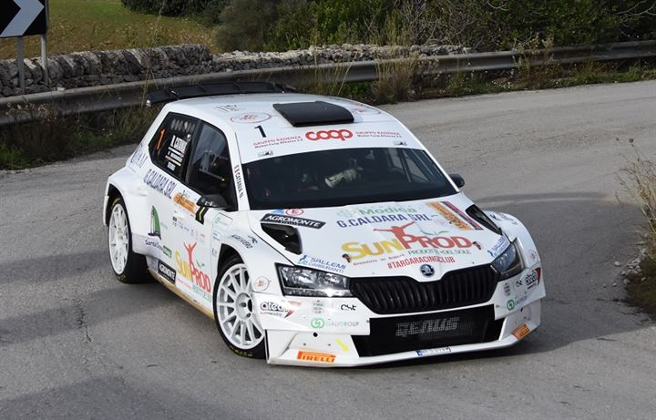
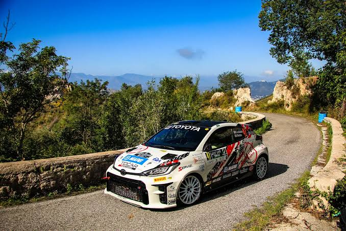

Rally Del Barocco Ibleo
campagne iblee
 7/12/2025
7/12/2025

Il rally nella provincia di Ragusa si distingue per i suoi tracciati scorrevoli e spettacolari, immersi nei paesaggi tipici del sud-est siciliano tra muretti a secco, campagne e centri storici. Le prove speciali ragusane sono molto apprezzate per il perfetto equilibrio tra velocità e tecnica, offrendo gare dinamiche e combattute fino all’ultimo chilometro. La forte partecipazione del pubblico e l’entusiasmo degli appassionati contribuiscono a creare un’atmosfera unica, trasformando ogni manifestazione in un grande evento dedicato ai motori e alla tradizione sportiva del territorio.